Introducción a la Investigación de Operaciones
Selecciona el tema de tu interés
Objetivo de la Investigación de Operaciones
Historia
Origen
Segunda Guerra Mundial
Debido a los esfuerzos bélicos, existía una necesidad urgente de asignar recursos escasos a las distintas operaciones militares
La Revolucion Industrial
El crecimiento organizacional permitió el uso de la investigación de operaciones en la industria.
Un ejemplo de la IO es el Método Simplex para resolver problemas de programación lineal, desarrollado en 1947 por George Dantzing
Adminitración de empresas
Se remontan a muchas décadas, cuando se hicieron los primeros intentos para emplear el método cientifico en la administración de una empresa
Evolución de computadoras
El desarrollo de la computadora electrónica difital, con su capacidad para realizar cálculos aritméticos, miles o tal vez millones de veces más rápido que los seres humanos fue una gran ayuda para la investigación de operaciones
Factores
Al terminar la guerra, el éxito de la investigación de operaciones en las actividades bélicas generó un gran interés en sus aplicaciones fuera del campo militar.
La aparición de nuevas herramientas o formas de programar como: programación lineal, programación dinámica, lineas de espera y teoría de inventarios.
El desarrollo o revolución de las computadoras
La investigación de operaciones se ha aplicado de manera extensa en áreas tan diversas como la manufactura, transporte, constitución, telecomunicaciones, planeacion financiera, cuidado de la salud, la milicia, servicios públicos, planeación de la producción, asignación de personal, inventarios, dietas, mercado, estrategias de inversión. Es decir, está presente en todas las organizaciones; permitiendo obtener los siguientes beneficios: Ahorrar dinero, Mejorar los procesos, Mayor productividad, es decir permite el bienestar de la organización.
La Investigación de Operaciones constituye una importante herramienta para gerencia a la hora de tomar cualquier decisión.
Concepto
La Investigación de Operaciones significa "hacer investigación sobre las operaciones"
La definicion de Churchman, Ackoff y Arnoff: la investifacion de operaciones es la aplicación, por grupos interdisciplinarios, del método científico a problemas relacionados con el control de las organizaciones o sistemas(hombre-maquina), a fin de que se produzcan soluciones que mejor sirvan a los objetivos de la organización.
Entonces, la investigación de operaciones se aplica a problema que se refueren a la conducción y coordinación de operaciones (o actividades) dentro de una organización.
La investigación de operaciones intenta encontrar una mejor solución (llamada solución óptima) para el problema bajo consideración.
Características
- Es la base para la toma de decisiones.
- Usa el método científico para investigar el problema.
- Aplica modelos matemáticos, para encontrar soluciones óptimas para la toma de decisiones, a largo plazo.
- Adopta un punto de vista organizacional e intenta resolver los conflictos de interés entre los componentes de la organización de forma que el resultado sea el mejor para la organización completa.
- Intenta encontrar una mejor solución o una solución óptima
- En la Investigación de Operaciones se ha desarrollado una serie de técnicas y modelos muy útiles a la Ingeniería en Sistemas. Entre ellos tenemos:
- Programación Lineal
- Teoría de Colas
- Programación Entera
- Programación Dinámica
- Tiende a representar el problema cuantitativamente para poder analizarlo y evaluar un criterio común.
Un modelo matemático es la descripción matemática (mediante simbolos y expresiones matemáticas) de una situación o fenómeno real.
Optimización
Determinar la mejor manera de cómo cubrir los objetivos, de acuerdo a los recursos disponibles.
ABC de la Optimización
- ¿Qué puedes decidir?
Son variables de decisión
- ¿Qué quiere decir "mejor"?
Función Objetivo
- ¿Qué restricciones limitan las decisiones?
Son restricciones
Regresar
Fases de Estudio de la Investigación de Operaciones
- Definición del problema
- Construcción del modelo
- Solución del modelo
- Validación del modelo
- Implementación del modelo
Definición del problema
- Recolección de datos
- Implica definir el alcance del problema que se investiga.
- Los objetivos deben estar planteados para el bienestar de toda la organización
- Su resultado final será:
- La descripción de las alternativas de decisión
- La determinación del objetivo del estudio
- La especificación de las limitaciones bajo las cuales funciona el sistema de modelado
Construcción del modelo
- Los modelos son representaciones idealizadas de objetos, sistemas o fenómenos que son abstraídas e idealizadas, por lo que son una parte integral de la vida diaria.
- Los modelos extraen la esencia de la materia de estudio, muestra sus interrelaciones y facilitan el análisis.
- Implica traducir la definición del problema a relaciones matemáticas.
- Un modelo matemático permite hacer más comprensible toda la estructura del problema y ayuda a revelar las relaciones importantes causa-efecto.
- Deben tomarse las decisiones cuantificables relacionadas entre sí, representadas por las variables de decisión, la medida del desempeño adecuada expresada en una expresión matemática, las limitaciones con las que se enfrenta.
Solución del modelo
- Es la fase más sencilla, por que supone el uso de algoritmos bien definidos de optimización
- Como el modelo necesariamente es una idealización más que una representación exacta del problema real no existe una garantía utópica de que la solución optima del modelo resulte la mejor.
- Implica traducir la definición del problema a relaciones matemáticas.
- Herbert, premio Nobel de economía introduce el término satisfizar, combinación de satisfacer y optimizar.
- Samuel Eilon, “optimizar es la ciencia de lo absoluto, satisfizar es el arte de lo factible”.
Validación del modelo
- Comprueba sí el modelo propuesto hace lo que se quiere que haga, esto es, ¿predice el modelo en forma adecuada el comportamiento del sistema que se estudia?
- El equipo de investigación de operaciones debe convencer de que el resultado del modelo no incluya “sorpresas”.
- ¿Tiene sentido la solución? ¿se puden aceptar intuitivamente los resultados?
- Puede examinarse a través de los datos históricos, la comparación propuesta debería ser favorable.
- sí el modelo representa un modelo nuevo, no existente, no habrá casos históricos para las comparaciones. En esos casos se podrá recurrir a una simulación, como herramienta independiente.
Implementación del modelo
Implica la traducción de los resultados a instrucciones de operación, emitidas en forma comprensible para las personas que administran el sistema recomendado.
Regresar
Clasificación de los Modelos
Modelos
Los modelos nos ayudan a tomar decisiones frente a problemas administrativos.
¿Qué es un modelo?
Es una representación de la realidad
¿Por qué un modelo?
Permite deducir conclusiones
Menos tiempo
Menos dinero
Reduce riesgo
Modelos
Icónicos
-
Analógicos
-
Matemáticos
Proceso de Construcción de un Modelo
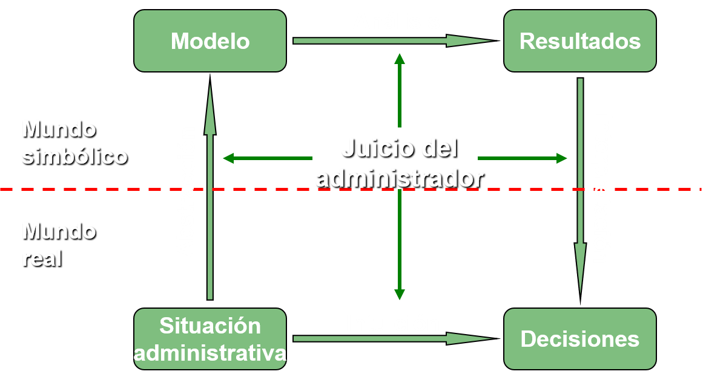
Proceso de Resolución de Problemas
- El modelo debe tener suficientes detalles como para que:
- El resultado sea satisfactorio
- Sea consistente con los datos
- Pueda ser analizado en el tiempo con el que se cuenta para ello
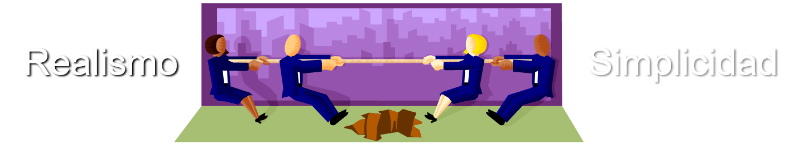
¿Qué hace el modelo?
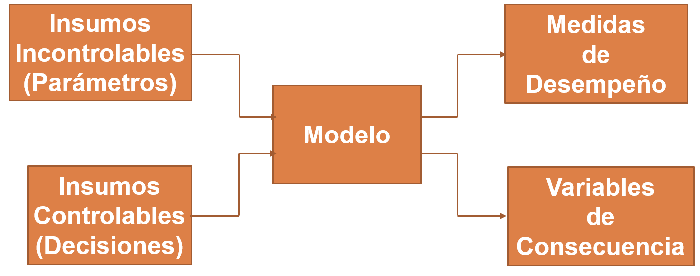
- ¿La solución del modelo dará la respuesta que se necesita?
No
- Se deben tener en cuenta factores cualitativos, que el modelo no está considerando
Tipos de Modelos
Determinísticos
- Modelos de transporte
- Modelos de redes
- Programación Matemática
- Programación lineal
- Programación entera
- Programación dinámica
- Programación no lineal
Probabilísticos
- Programación Estocástica
- Gestión de Inventarios
- Fenómenos de Espera(cola)
- Teoría de Juegos
- Simulación
Regresar
Metodología de la construcción de Modelos
Formulación Del Modelo Y Recolección De Datos
Modelos Matemáticos
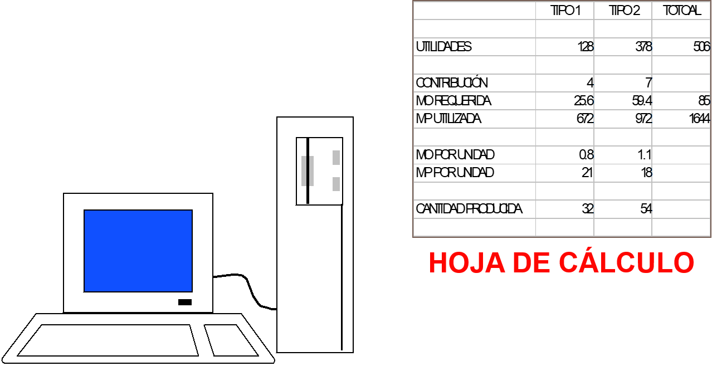
RESOLUCIÓN DEL MODELO
- Método Óptimo: Mejores Valores posibles
- Método Heurístico: Valores aceptables
Validación De La Solución
Modificación DEL MODELO
Generación de Reportes e Implementación DEL MODELO
Los valores numéricos determinados por el modelo implican decisiones específicas (asignación de recursos). Se debe hacer un seguimiento de la eficacia del modelo.
Regresar
Programación Lineal
Selecciona el tema de tu interés
Caracteristicas de la programación Lineal
Introducción a la Programación Lineal
El objetivo de un modelo matemático es reproducir la realidad de la forma más fiel posible a fin de entender cómo se comporta y poder obtener respuestas a determinadas acciones.
La programación lineal es un tipo de modelo matemático que se desarrolló a partir de la Segunda Guerra Mundial para resolver cierto tipo de problemas de asignación de recursos entre distintas actividades.
Después de la guerra las aplicaciones de la programación lineal se extendieron a una amplia variedad de problemas, de manera que hoy se utiliza en campos como la ingeniería, la economía, la gestión, y muchas otras áreas de la ciencia, la técnica y la industria.
La programación lineal fue formulada por George B. Dantsig alrededor de 1947, cuando trabajaba como consejero matemático para la Fuerza Aérea de Estados Unidos en el desarrollo de un sistema automático de planificación temporal de despliegue, entrenamiento y abastecimiento logístico.
Debido a que la Fuerza Aérea denomina programas a sus diversos planes y proyectos a implementar, en el primer artículo publicado por Dantzig se refiere a este problema como programación en una estructura lineal.
El término programación lineal fue acuñado por el economista y matemático T.C. Koopmans en el verano de 1948 cuando colaboraba con el propio Dantzig.
En 1949, Dantzig publicó el método del simplex para resolver programas lineales, método que fue ampliamente aceptado por su capacidad de producir soluciones en un tiempo razonable.
La programación lineal estudia la optimización (minimización o maximización) de una función lineal que satisface un conjunto de restricciones lineales de igualdad y/o desigualdad.
Formulación de un modelo de programación lineal
En el proceso de formulación de un modelo de programación lineal hay que dar los siguientes pasos:
- Determinación de las variables de decisión. Representan los elementos del sistema a modelar que son controlables por el decisor. En los modelos lineales continuos estas variables toman como valores números reales y se representan por letras con subíndices x1 , x2 ,como se acostumbra a hacer con las variables matemáticas, o literales alusivos a su significado: peso, valor, etc. En el primer caso también se utiliza la representación como vector de un conjunto indexado de variable:
- Determinación de las restricciones. Representan las limitaciones prácticas de determinados recursos o imposiciones físicas de la realidad. Se expresan como ecuaciones e inecuaciones lineales de las variables de decisión.
Matemáticamente adoptan una de las siguientes formas:
- Formulación de la función objetivo. Se trata de la función que mide la calidad de la solución y que hay que optimizar (maximizar un beneficio o minimizar un coste). También es una función lineal de todas o parte de las variables de decisión.
Representación gráfica de los problemas de programación lineal
Un problema de programación lineal con 2 variables de decisión se puede representar gráficamente en el plano cuyas coordenadas son las propias variables. Para ello se representan las rectas que resultan de convertir las restricciones de desigualdad en ecuaciones, y se determina con el signo de desigualdad el semiplano que define cada restricción (marcado en el dibujo con una flecha verde perpendicular a la recta). La región factible queda determinada por la intersección de los semiplanos que definen las restricciones.
Clasificación de los problemas de programación lineal según el tipo de solución
Atendiendo al tipo de solución podemos clasificar los problemas de programación en las siguientes categorías:
Veamos con la ayuda de la representación gráfica de la región factible un ejemplo de cada tipo.
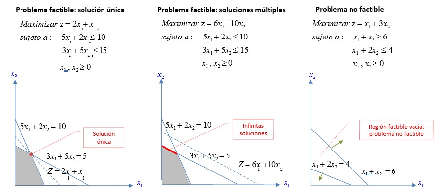
Un problema factible que tenga la recta de iso‐beneficio paralela a la recta de una restricción que contenga un punto extremo óptimo, tendrá todo un segmento de puntos óptimos.
Clasificación de los problemas de programación lineal según el tipo de solución (continuación)
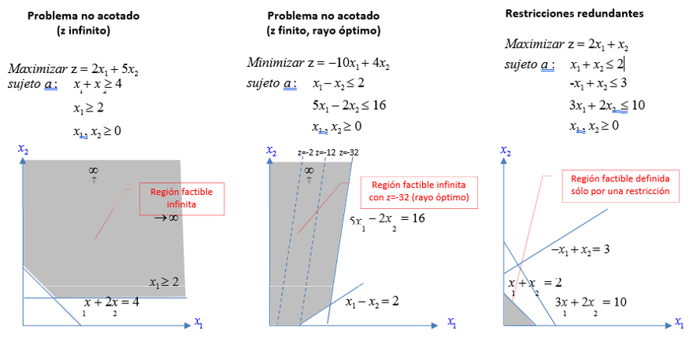
Los lenguajes de modelado como OPL suelen informar del carácter factible, no factible (infeasible)o no acotado (unbounded) de la solución.
Regresar
Variantes de la Programación Lineal
Selecciona el tema de tu interés
Modelo de Transporte
El modelo de transporte es una clase especial de programación lineal que tiene que ver con transportar un artículo desde sus fuentes (fabricas) hasta sus destinos (bodegas).
En el modelo se supone que el costo de transporte es proporcional a la cantidad de unidades transportadas en una determinada ruta.
Aunque el modelo se puede resolver como una programación lineal normal, su estructura especial permite desarrollar un algoritmo especial.
Hay m fuentes y n destinos, cada fuente y cada destino representados por un nodo. Los arcos representan las rutas que enlazan las fuentes y los destinos. El arco (i, j) que une a la fuente i con el destino j conduce 2 clases de información: el costo de transporte cij por unidad y la cantidad transportada xij.
El objetivo del modelo es determinar las incógnitas xij que minimicen el costo total de transporte, y que al mismo tiempo satisfagan las restricciones de oferta y demanda.
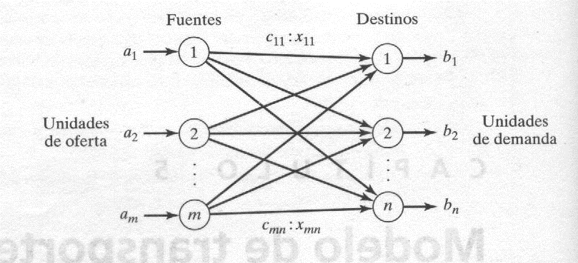
La estructura especial del modelo de transporte permite asegurar que haya una solución básica artificial de inicio, obtenida con uno de los tres métodos siguientes:
- Método de la esquina noroeste (superior, izquierda)
- Método del costo mínimo
- Método de aproximación de Vogel
Método de la esquina noroeste
- Asignar todo lo más que se pueda a la celda seleccionada y ajustar las cantidades asociadas de oferta y demanda restando la cantidad asignada.
- Salir del renglón o la columna cuando se alcance oferta o demanda cero, y tacharlo, para indicar que no se pueden hacer más asignaciones a ese renglón o columna. sí un renglón y una columna dan cero al mismo tiempo tachar solo uno (el renglón o la columna) y dejar una oferta (demanda) cero en el renglón (columna) que no se tachó.
- sí queda exactamente un renglón o columna sin tachar, detenerse. En caso contrario avanzar a la celda de la derecha sí se acaba de tachar una columna, o a la de abajo sí se tachó un renglón. Seguir el paso 1.
Método del costo mínimo
Este método determina una mejor solución de inicio, porque se concentra en las rutas menos costosas
Ejemplo
La compañía SunRay Transport transporta grano desde tres silos hasta cuatro molinos. La oferta (en caminadas) se resume en el modelo de transporte de la tabla siguiente junto con los costos unitarios de transporte por camionada en las distintas rutas. Los costos unitarios de transporte, Cij (10, 2, 20,11…) están en cientos de $.
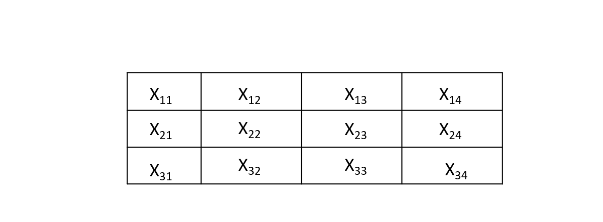
- La celda (1,2) tiene el costo unitario mínimo de toda la tabla (=$2). Lo más que se puede transportar por (1,2) es x12 =15 camionadas, y en este caso se satisfacen al mismo tiempo el renglón 1 y la columna 2. Se tacha en forma arbitraria la columna 2 y se ajusta la oferta del renglón 1 a 0.
- La celda (3,1) tiene el mínimo costo sin tachar (=$4). Se asigna x31=5, se tacha la columna 1 porque quedó satisfecha y se ajusta la demanda del renglón 3 a 10-5=5 camionadas.
- Al continuar de este modo, se asignan en forma sucesiva 15 camionadas a la celda (2,3), 0 camionadas a la celda (1,5), 5 a la celda (3,4) y 10 a la (2,4).
Método de aproximación de Vogel
- Determinar para cada renglón (columna) una medida de penalización restando el elemento de costo unitario mínimo en el renglón (columna) del elemento con costo unitario siguiente al mínimo del mismo renglón (columna).
- Identificar el renglón o columna con la mayor penalización. Romper los empates en forma arbitraria. Asignar todo lo posible a la variable que tenga el mínimo costo unitario del renglón o columna seleccionado. Ajustar la oferta y la demanda y tachar el renglón o la columna ya satisfechos. sí se satisfacen un renglón y una columna en forma simultánea, sólo se tacha uno de los dos y al que queda se le asigna la oferta o demanda cero.
- sí queda sin tachar exactamente un renglón o columna con cero oferta o demanda. Detenerse.
- sí queda sin tachar un renglón (columna) con oferta (demanda) positiva, determinar las variables básicas en el renglón (columna) con el método y costo mínimo. Detenerse.
- sí todos los renglones y columnas que no se tacharon tienen un cero oferta y demanda (Restante), determinar las variables básicas cero por el método del costo mínimo. Detenerse.
- En cualquier otro paso, seguir el paso 1.
Regresar
Modelo de Asignación
Método Húngaro
- En la matriz de costo, identificar el mínimo de cada renglón y restarlo de todos los elementos del renglón
- En la matriz que resulte del paso 1, identificar el mínimo de cada columna, y restarlo de todos los elementos de la columna.
- Identificar la solución óptima como la asignación factible asociada con los elementos cero de la matriz obtenida en el paso 2.
CASO ESPECIAL, CUANDO NO HAY ASIGNACIÓN FACTIBLE
Durante el paso 2
- Trazar la cantidad mínima de líneas horizontales y verticales en la última matriz reducida que cubran todos los elementos cero.
- Seleccionar el elemento mínimo no cubierto, resaltarlo de todo elemento no cubierto y a continuación sumarlo a todo elemento en la intersección de dos líneas
- sí no puede encontrar una asignación factible entre los elementos cero que resulten, repetir el paso 2ª. En caso contrario, seguir el paso 3 para determinar la asignación óptima
Regresar
Modelo de Secuenciación
CMP Y PERT
Los métodos CMP( método de la ruta crítica o del camino crítico) y PERT( técnica de evaluación y revisión del programa) se basan en redes, y tienen por objeto auxiliar en la planeación, programación y control de proyectos. Se define un proyecto como conjunto de actividades interrelacionadas, en la que cada actividad consume tiempo y recursos.
El objetivo del CMP y del PERT es contar con un método analítico para programar las actividades.
Fases de planeación de un proyecto con CMP o PERT
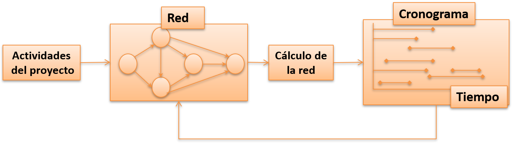
Resumen de los pasos de estas técnicas:
- Definición de las actividades del proyecto, sus relaciones de precedencia y sus necesidades de tiempo.
- El proyecto se traduce en una red que muestre las relaciones de precedencia entre las actividades.
- Realizar cálculos específicos de redes, que forman la base del desarrollo del programa del proyecto en funcion del tiempo.
Durante la ejecución del proyecto, podría no cumplirse el programa que estaba planeado, causando que algunas de las actividades se adelanten o se atrasen. En este caso será necesario actualizar el programa para que refleje la realidad.
Ésta es la razón de incluir un bucle, lazo o ciclo de retroalimentación entre la fase de programa y la fase de red.
Método CMP
El método CMP supone duraciones determinanticas de actividad
Método PERT
El método PERT supone duraciones probabilísticas.
Representación en red
Cada actividad del proyecto se representa con un arco que apunta en la dirección de avance del proyecto. Los nodos en la red establecen las relaciones de precedencia entre las diferentes actividades del proyecto.
Para configurar la red se disponen las siguientes reglas:
- Cada actividad se representa con un arco, y uno solo.
- Cada actividad se debe identificar con dos nodos distintos.
- Para mantener las relaciones de precedencia correctas, se deben contestar las siguientes preguntas cuando se agrega a la red cada actividad:
- ¿Qué actividades deben anteceder inmediatamente a la actividad actual?
- ¿Qué actividades deben seguir inmediatamente a la actividad actual?
- ¿Qué actividades deben efectuarse en forma concurrente o simultanea con la actividad actual?
Uso de una actividad ficticia para tener representación única de las actividades concurrentes A y B
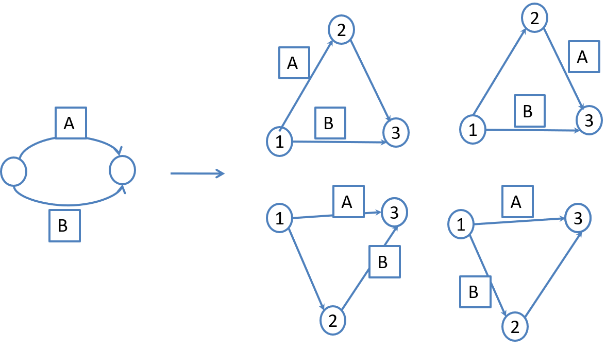
- La actividad C comienza de inmediato después de haber terminado A y B.
- La actividad E se inicia después de que sólo terminó la actividad B.
Uso de una actividad ficticia para asegurar una relación de precedencia correcta.
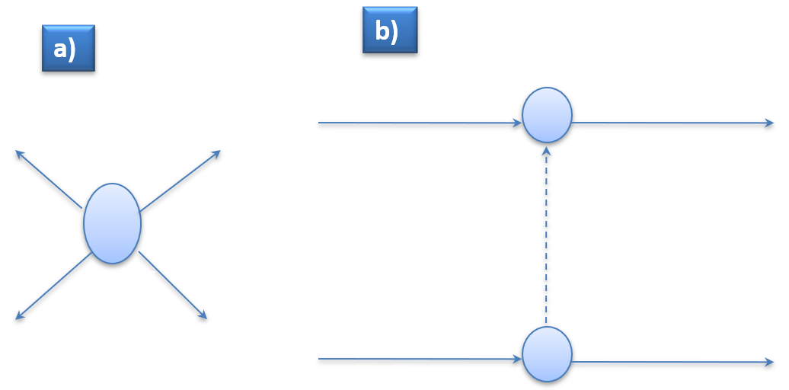
- Representación incorrecta de esta relación de procedencia, porque pide que A y B terminen antes de poder iniciar.
- Representación corregida.
Cálculos para la ruta critica (CMP)
El resultado final de CMP es la formulación o construcción del programa del proyecto. Para lograr este objetivo se hacen cálculos especiales con los que se obtiene la siguiente información:
- Duración total necesaria para terminar el proyecto.
- Clasificación de las actividades del proyecto en criticas y no criticas.
- Actividad critica:
- sí no hay margen en la determinación de sus tiempos de inicio y de termino.
- Actividad no critica:
- Permite alguna holgura en su programación, de modo que el tiempo de inicio de la actividad se pueda adelantar o retrasar dentro de ciertos limites, sin afectar la fecha de determinación del proyecto.
- Evento (nodo):
- Se define como un momento en el tiempo en el que se terminan actividades y otras se inician.
Se define lo siguiente:
- □j
- Tiempo más temprano de ocurrencia del evento j.
- ∆j
- Tiempo más tardío de ocurrencia del evento j.
- Dij
- Duración de la actividad (i,j).
Las definiciones de los tiempos más temprano y más tardío del evento j se especifican en relación con las fechas de inicio y terminación de todo el proyecto.
Pasos para los cálculos de ruta critica
- Paso hacia adelante (tiempos más tempranos de ocurrencia o tiempos más próximos de ocurrencia, □). Los cálculos se inician en el nodo 1 y avanza en forma recursiva hasta el nodo final n.
- Paso inicial
- Poner el □j =0, para indicar que el proyecto se inicia cuando el tiempo es 0.
- Paso general j
- Dado que los nodos p,q, …y v están enlazados directamente con el nodo j por las actividades de entrada (p,j),(q,j),… y (v,j) y que los tiempos más tempranos de ocurrencia de los eventos (nodos) p,q,…y v ya se han calculado, entonces se calcula el tiempo más temprano de ocurrencia del evento j como sigue:
□j = max{□p + Dpj , □q + Dqj, …□v + Dvj }
El paso hacia adelante se termina cuando se calcula □n en el nodo n. Por definición, □j representa la ruta (duración) más larga al nodo j.
- Paso hacia atrás (tiempos más tardíos de ocurrencia o tiempos más lejanos de ocurrencia, ∆). Los cálculos del paso hacia atrás comienzan en el nodo n y terminan en el nodo 1.
- Paso inicial
- Igualar ∆n = □n para indicar que las ocurrencias más temprano y más tardío del ultimo nodo en el proyecto son iguales.
- Paso general j
- Dado que los nodos p,q, …y v están enlazados directamente con el nodo j por las actividades de salida (j, p),(j, q), … y (j,v) y que los tiempos más tardíos de ocurrencia de los eventos (nodos) p, q, …y v ya se han calculado, entonces se calcula el tiempo tardío de ocurrencia del evento j como sigue:
∆j = min{∆p – Djp, ∆q - Djq, …, ∆v - Djv }
El paso hacia atrás se termina cuando se calcula ∆1 en el nodo 1.
Con base en los cálculos anteriores, una actividad (i, j) será crítica sí satisface 3 condiciones:
- ∆i = □j
- ∆j = □j
- ∆j - ∆i = □j - □i =Dij
Las 3 condiciones indican que los tiempos más tempranos y tardíos de ocurrencia de los nodos i y j son iguales y que la duración Dij se ajusta exactamente al intervalo especificado de tiempo. Una actividad que no satisface las 3 condiciones es no crítica.
Las actividades criticas de una red deben formar una trayectoria no interrumpida que abarque toda la red, desde el inicio hasta el final.
Se reconoce que □j representa el tiempo más temprano de iniciación de una actividad ( i, j) y que ∆j representa el tiempo más tardío de terminación. Esto quiere decir que (∆i ,□j ) limita el intervalo máximo de tiempo durante el cual se puede programar la actividad (i, j).
Determinación de las holguras
son las holguras de tiempo disponibles dentro del intervalo asignado para la actividad no critica. Las dos más comunes son:
- Holgura total
- Es el exceso del intervalo de tiempo definido por el tiempo más temprano de ocurrencia del evento i hasta el tiempo más tardío de ocurrencia del evento j en la duración de (i, j); esto es, TF ij = ∆i - □j - Dij
- Holgura libre
- Es el exceso del intervalo de tiempo definido por el tiempo más temprano de ocurrencia del evento i hasta el tiempo más temprano de ocurrencia del elemento j durante la duración de (i,j); esto es, FF ij = es el exceso del intervalo de tiempo definido por el tiempo más temprano de ocurrencia del evento i hasta el tiempo más tardío de ocurrencia del evento j en la duración de (i,j); esto es, FF ij = □j - □j – Dij
- Por definición, FFij ≤ TFij
Calculo de las holguras totales y libres
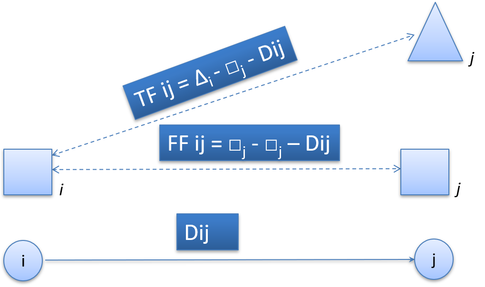
Regla de la bandera roja. Para una actividad (i, j) no critica
- sí FFij = TFij entonces se puede programar la actividad en cualquier lugar dentro de su intervalo (∆i - □j) sin causar conflicto con el programa.
- sí Ffij < TFij entonces el inicio de la actividad (i, j) se puede demorar cuando mucho hasta FFij apartir de su tiempo más temprano de inicio (□j) sin causar conflicto con el programa. Toda demora mayor que FFij (pero no mayor que TFij) se debe acompañar por una demora igual apartir de □j en el tiempo de iniciacion de todas las actividades que salen del nodo j.
Formulación del método de la ruta critica con programación lineal
- Se puede aplicar la formulación como programa lineal de ruta más corta a la ruta critica, como sigue. Supondremos que un flujo unitario entra a la red en el nodo de inicio y sale en el nodo final.
- Xij = Cantidad de flujo en la actividad (i, j) para toda i y j definida.
- Dij = Duración de la actividad (i, j) para toda i y j definida.
Así, la función objetivo del programa lineal se transforma en:
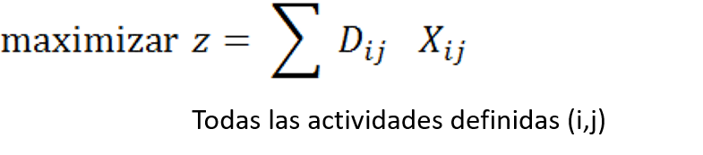
Hay una restricción que representa la conservación del flujo en cada nodo; esto es, para todo nodo j.
Flujo total que entra = Flujo total que sale
Naturalmente, todas las variables Xij son no negativas.
En el problema de la ruta más corta, se puede usar el dual del programa lineal para resolver el problema CMP (de ruta critica).
Redes de PERT
El PERT difiere del CMP en que basa la duración de una actividad en 3 estimaciones:
- Tiempo optimista a, donde se supone que la ejecución va extremadamente bien.
- Tiempo más probable m, donde se supone que la ejecución se hace bajo condiciones normales.
- Tiempo pesimista b, donde se supone que la ejecución va extremadamente mal.
Se supone que el intervalo (a, b) abarca todas las estimaciones posibles de la duración de una actividad, por consiguiente, el estimado m debe estar en algún lugar dentro del intervalo (a, b). Con base en los estimados el tiempo promedio de duración D, y la varianza v, se calculan como sigue:
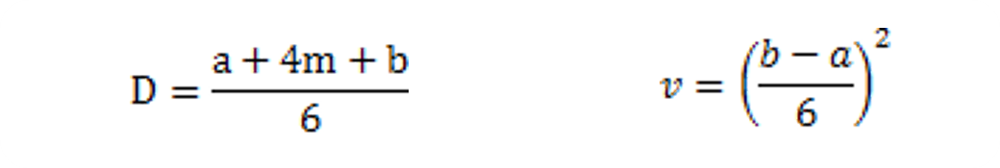
- Los cálculos de ruta critica (CMP) que se explicaron anteriormente se pueden aplicar en forma directa, sustituyendo la estimación única D por D.
- Ahora es posible estimar la probabilidad de que un nodo j en la red suceda en un tiempo programado especificado con anterioridad, Sj.
- Sea ej el tiempo más temprano de ocurrencia del nodo j. como las duraciones de las actividades que van del nodo de inicio al nodo j son variables aleatorias, ej también debe ser una variable aleatoria. Suponiendo que todas las actividades en la red sean estadísticamente independientes, se puede determinar la media, E{ej} y la varianza, var{ej} como sigue. sí sólo hay una ruta desde el nodo de inicio hasta el nodo j, la media es la suma de la duración esperada D, para todas las actividades a lo largo de esa ruta, y la varianza es la suma de las varianzas y de las mismas actividades.
- Por otra parte, sí hay más de una ruta que llegue al nodo j, será necesario calcular primero la distribución estadística de la duración de la ruta más larga, antes de calcular la media y la varianza correctas. Este problema es bastante difícil, porque equivale a determinar la distribución del máximo de varias variables aleatorias. Por consiguiente, una hipótesis simplificadora es calcular la media y la varianza. E{ej} y var {ej}, como el de la ruta al nodo j que tenga la suma mayor de duraciones esperadas de las actividades. sí hay 2 o más rutas que tienen la misma media (o promedio), se selecciona la que tenga la varianza mayor, porque refleja la máxima incertidumbre y en consecuencia conduce a un estimado más conservador de las probabilidades.
Una vez calculado la media y la varianza E{ej} y var {ej} de la ruta al nodo j, la probabilidad que se realice el nodo j en un tiempo Sj preestablecido, se calcula con la siguiente fórmula:
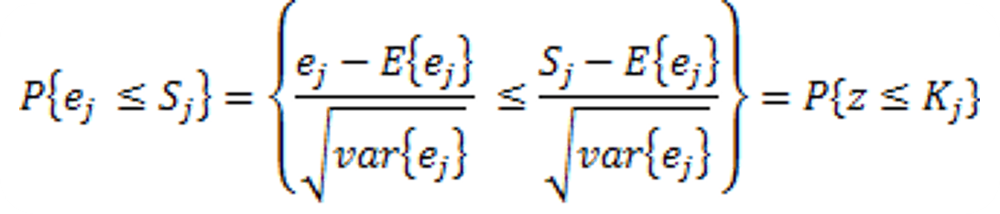
En donde:
z= Variable aleatoria normal estándar
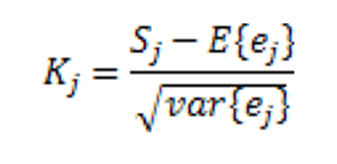
La variable aleatoria normal estándar z tiene media 0 y desviación estándar 1. La justificación para usar la distribución normal es que ej es la suma de variables aleatorias independientes. De acuerdo con el teorema del límite central (o ley de la distribución de los errores), ej está distribuida normalmente, en forma aproximada.
Regresar